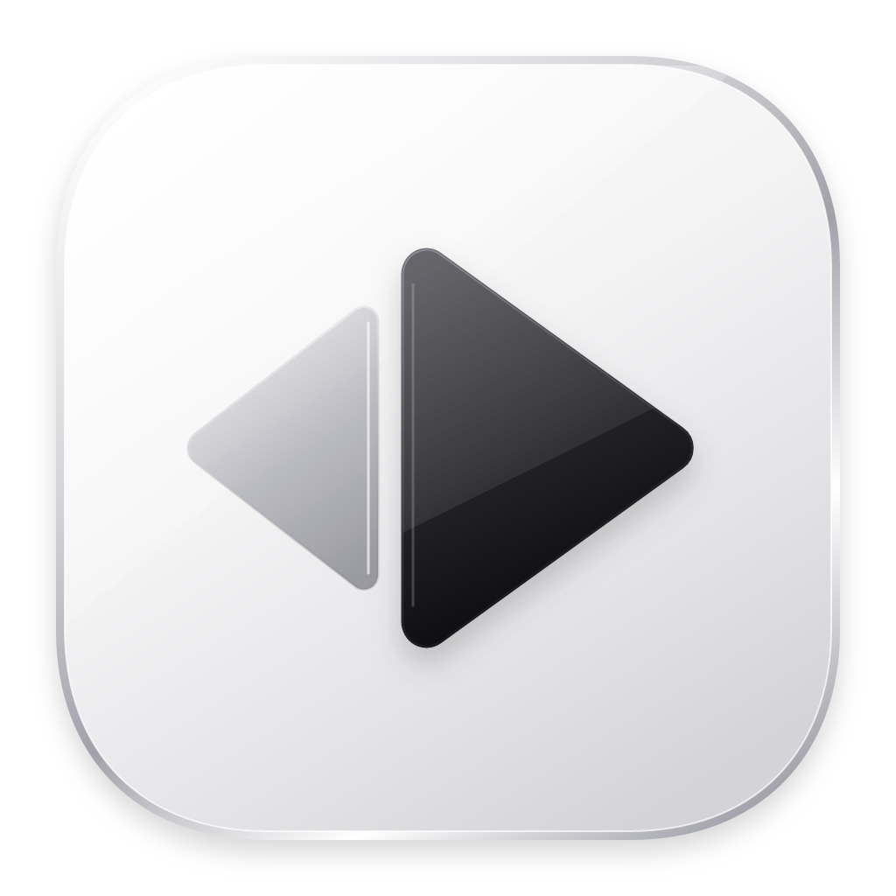
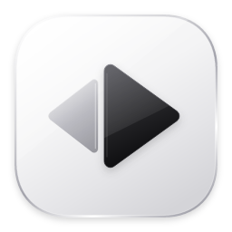

MIRROR / APP IDENTITY
SILVER · GRAPHITE · REFLECTION

Mirror
清澈，映见每一帧。
ON DARK / 深色背景
Mirror
SMALL, STILL CLEAR / 小尺寸辨识

01镜面底座
银白中性配色，连续圆角与细薄高光。
呼应播放器干净、克制的磨砂界面。
02播放与倒影
石墨色播放切面，搭配更轻的反向映像。
让播放功能与 Mirror 名称在一个图形中相遇。
03为桌面而生
矢量源稿，1024 px 高清母版。
透明外沿，同步输出 Windows / macOS 图标。